Visions for the future of computing
Cultures of Programming — Part 7
Tomas Petricek, Charles University, Prague

Humanistic essays
Imagining the future of computing
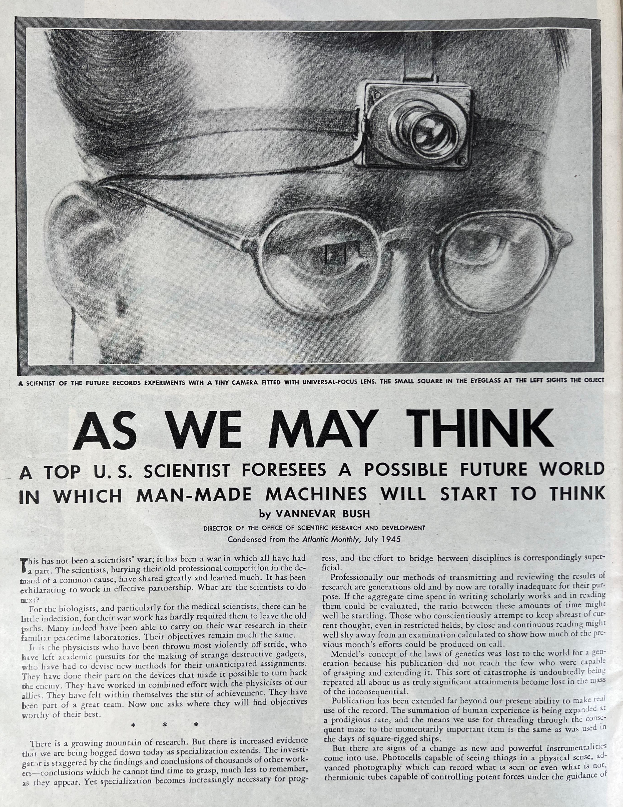
As we may think (1945)
"Consider a future device ... in which an individual stores all his books .. and communications, and which is mechanized so that it may be consulted with exceeding speed and flexibility. It is an enlarged intimate supplement to his memory."
Vannevar Bush
Background
- Electrical Engineering at MIT (1919)
- Analog differential analyzer
- Inventor, science administrator
Library problem
- Modern scientific enterprise
- Need to "plough through hundreds of materials"
- Analog vision, based on microfiche
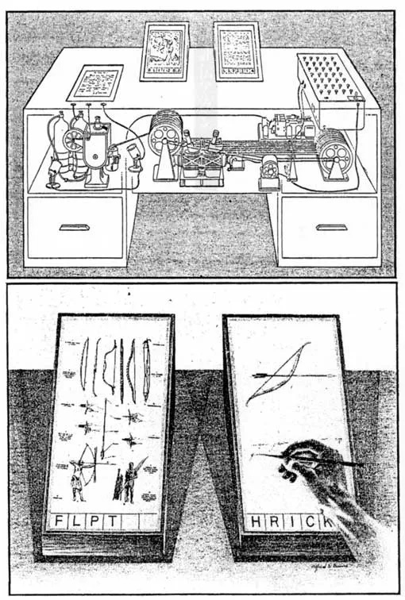
Bush's Memex system
Electromechanical device for information management
Associative trails
Allows "linking" of files across human knowledge
Personal annotations
Drawn on the desk, photographed and linked
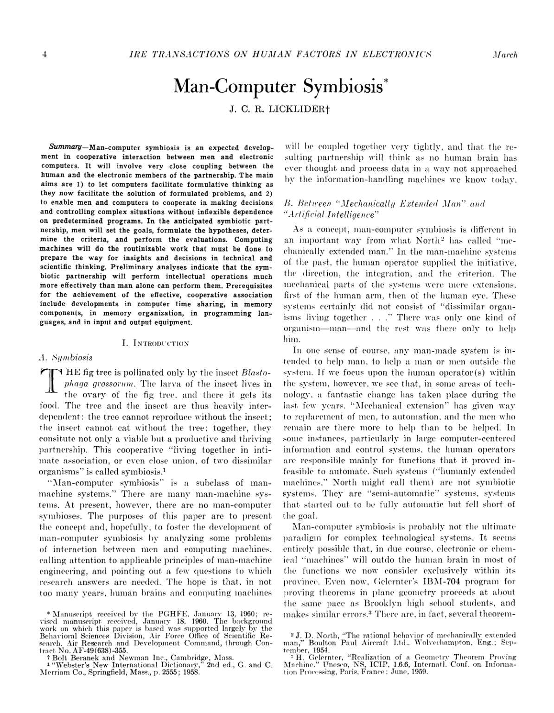
Man-Computer Symbiosis (1960)
The hope is that, in not too many years, human brains and computing machines will be coupled together very tightly, and that the resulting partnership will think as no human brain has ever thought and process data in a way not approached by the information-handling machines we know today.
J. C. R. Licklider
Background
- PhD in psychoacoustics research
- Human factors of the SAGE system
- Moved from MIT to BBN
Time-sharing systems
-
Learned about the idea from
Christopher Strachey - Prototyped BBN Time-Sharing System
- Director at ARPA (1962, 1974)
ARPA
Information Processing Techniques Office
- Command and control research for military
- Time-sharing via Project MAC, CTSS & Multics
- ARPANET, the predecessor of the Internet
- Community behind NLS and Xerox PARC
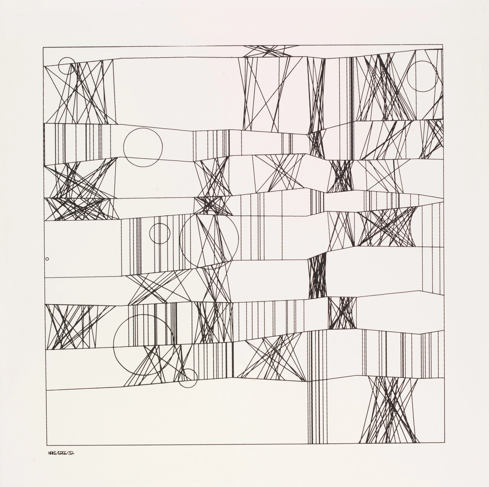
Frieder Nake
Computer art pioneer
Two exhibitions
in Stuttgart and
New York in 1965
Noll's study with reconstruction of Mondrian's "Composition with Lines"
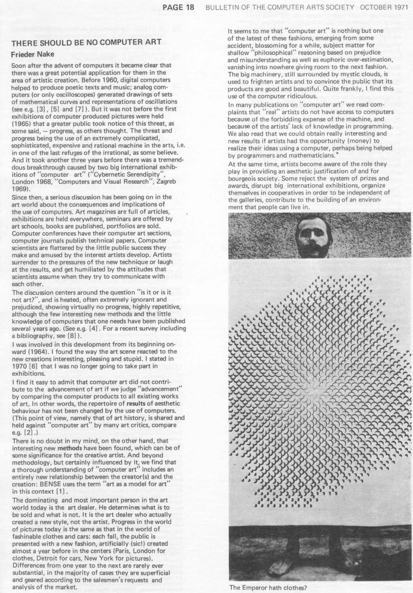
There should be no computer art (1971)
"It seems to me that computer art is nothing but one of the latest fashions"
"Computers ought not to be used for the creation of another art fashion."
"Computers can and should be used in art in order to draw attention to new circumstances and connections and to forget art."
Future of computing
Humanistic perspectives
- What could computing do in the future?
- Human at the centre of these visions!
- Empowering human to achieve more
- Critical of the current practice
Programming
Man-machine symbiosis
Ivan Sutherland's Sketchapd (1963)
Predecessor of CAD systems for TX-2 with custom HW tweaks
- Light pen input
- Prototype-based abstraction model
- Visual constraints
Ivan and Bert Sutherland
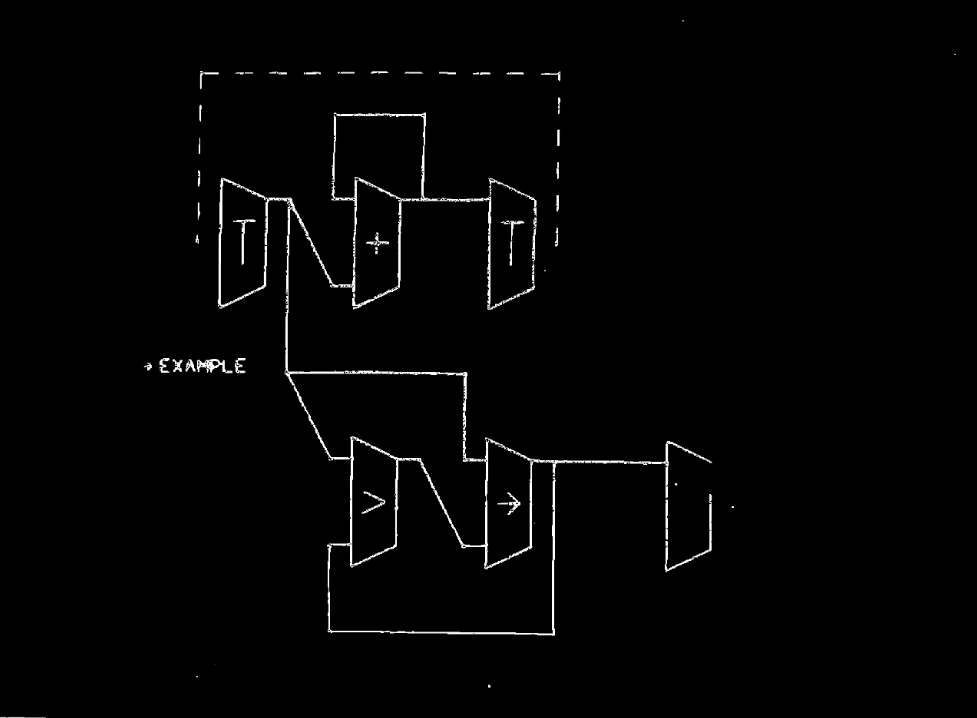
Sketchpad project (1963)
- "Communication system" in a subtitle
- Sketching, drawing, modelling
- Most expensive computer at the time
Follow up project (1966)
- Online graphical specification of computer procedures
- Programming using (then ubiquitous) flow-charts
- Inspired later tablet-based GRAIL system
A Step Toward Man-Computer Symbiosis
Warren Teitelman (1966)
Sources of inspiration
- Interactive LISP editor
- Man-Computer Symbiosis
- Experimenting with running program in AI context
Lisp programming systems
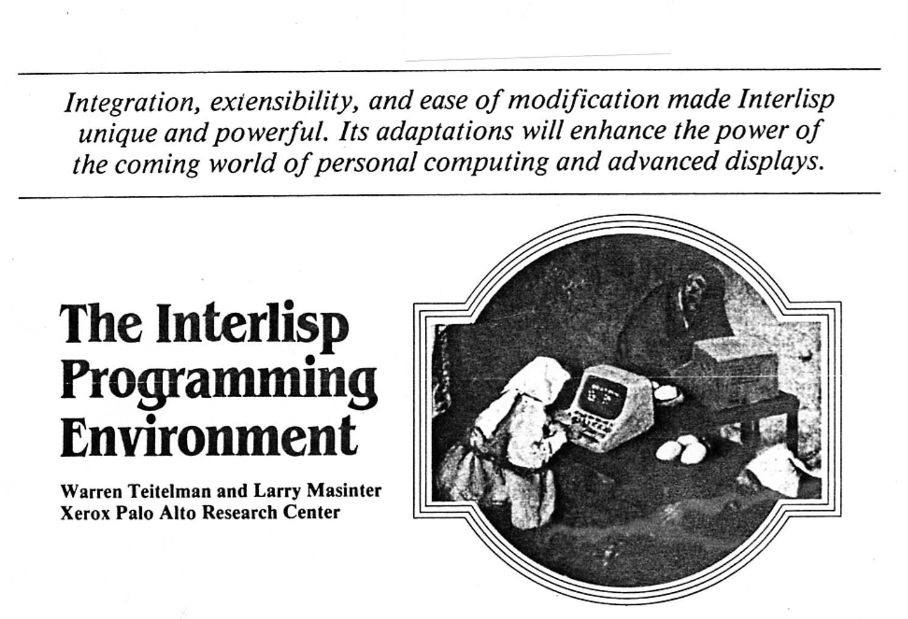
PILOT
- List transformation language FLIP
- Advising to modify procedures
- Lisp as a programming system
DWIM
- Auto-correction system for Interlisp
- Parenthesisation and typos fixed interactively at runtime
- "Damn Warren's Infernal Machine"
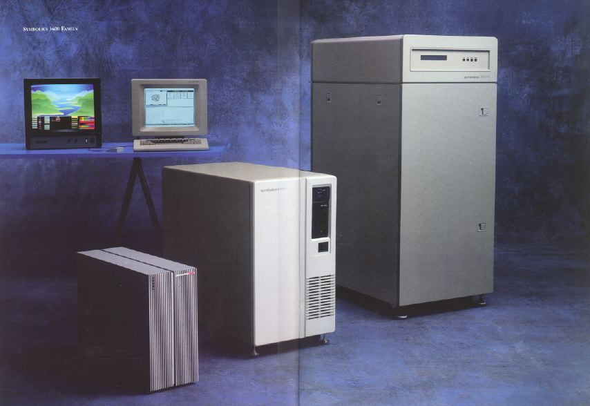
Lisp machines
Lisp as the operating system with interactive programming support
Accidental motivation
PDP-10 used 36-bit words, subsequent computers had less
Programming
Thinking about thinking
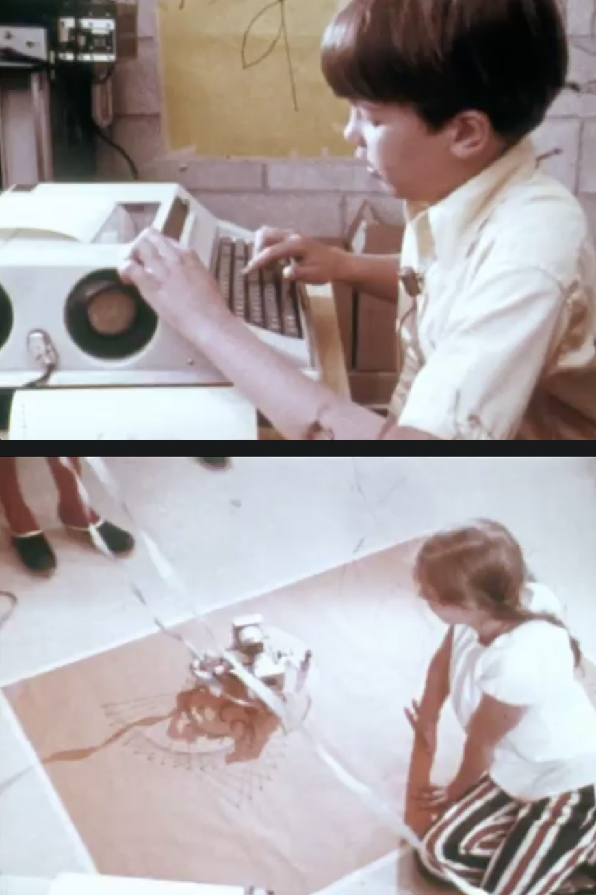
Logo environment (1967)
"The computer can be a mathematics-speaking and analphabetic-speaking entity. We are learning how to make computers with which children love to communicate. When this communication occurs, children learn mathematics as a living language."
Piaget's theory of active learning
MIT AI Lab
Minsky and Papert
-
Extraordinary learning
in the hacker community - Education research at BBN
- Thinking in humans, thinking in machines
LOGO research
- Teaching "powerful ideas" such as meta-language
- Microwords for linguistics and drawing (turtle)
"Revolutionary" educational ideas
Let children learn by working on their own
Button box to see how early can kids learn
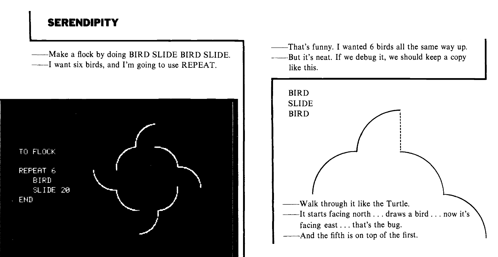
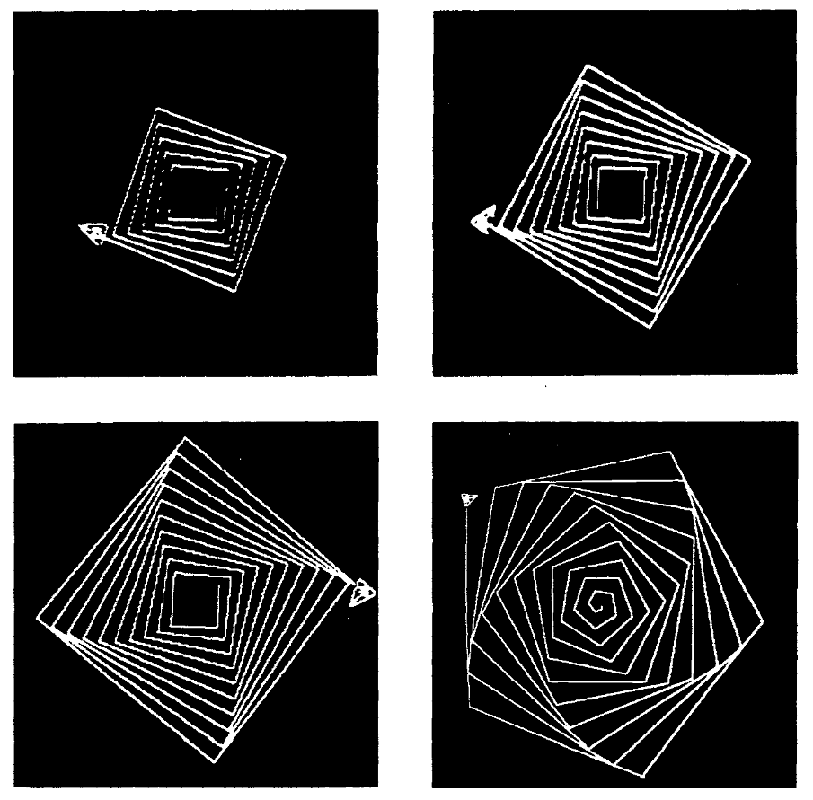
Serendipity
Computer environment made up of people, things, ideas. A way of thinking about computers and about learning and about talking about what you were doing.
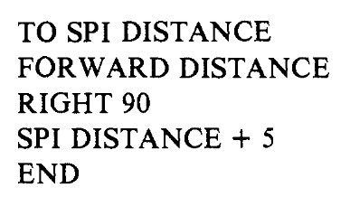
-
Learning happens when
unexpected things happen - Supportive environment
- Attention to wording
Humanistic and hacker views
-
Direct interaction with computer
Supports human learning and understanding -
Modifying programs live
Rapid feedback, guides understanding -
At odds with managerial and engineering needs
Too expensive, too easy to break -
Exploring novel interfaces
Visual programming, leverage visual thinking
Mother of All demos
Cultures of Programming
Home Continue to Part 8